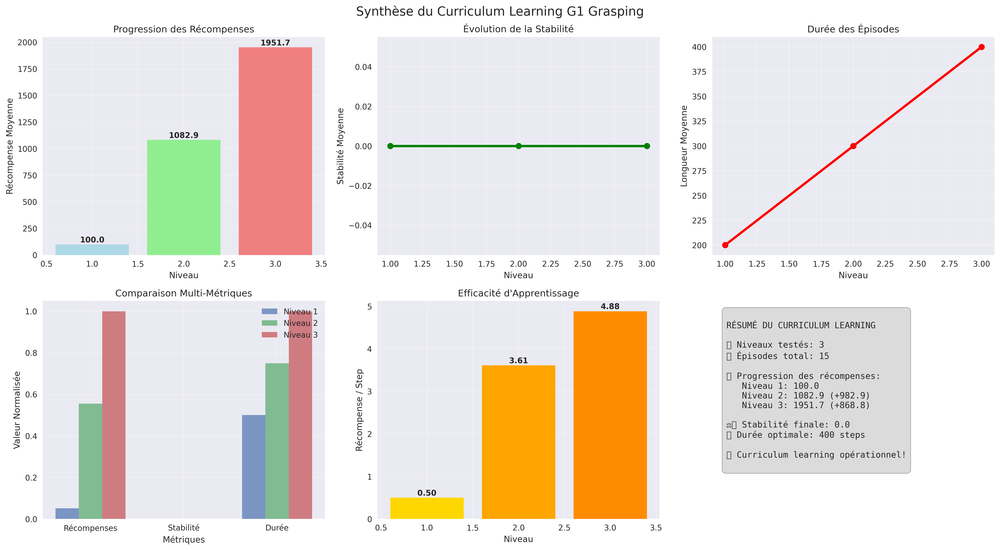
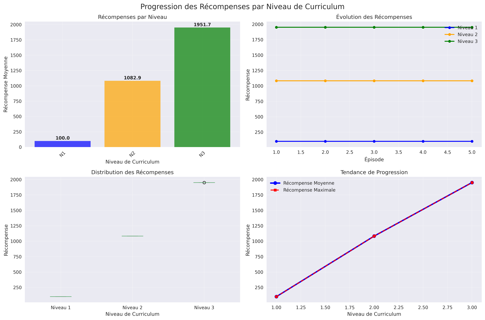
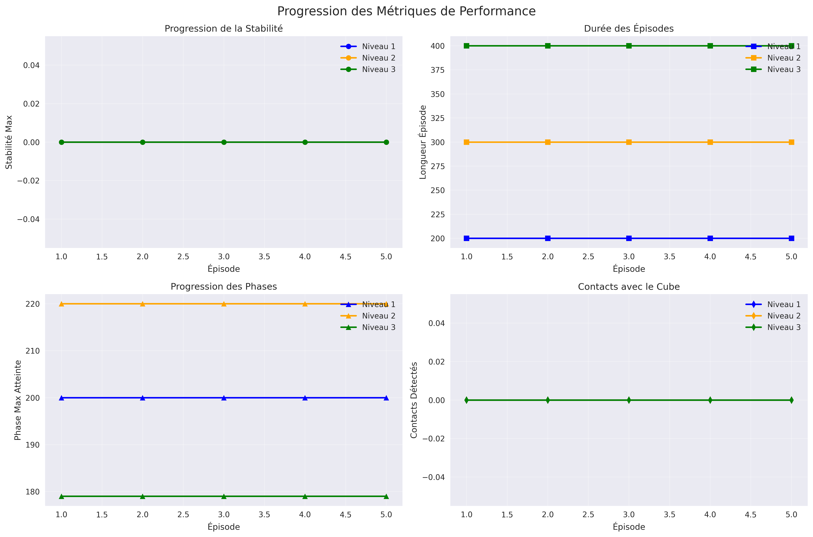
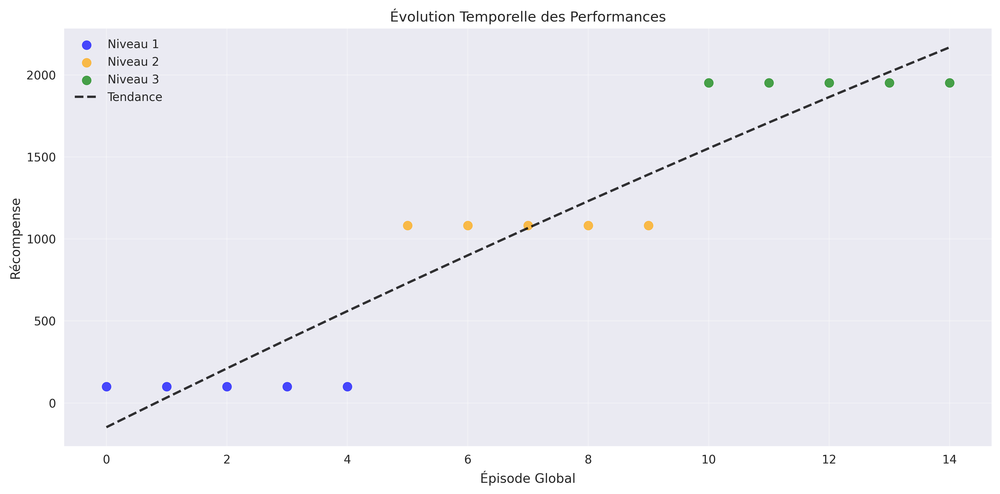
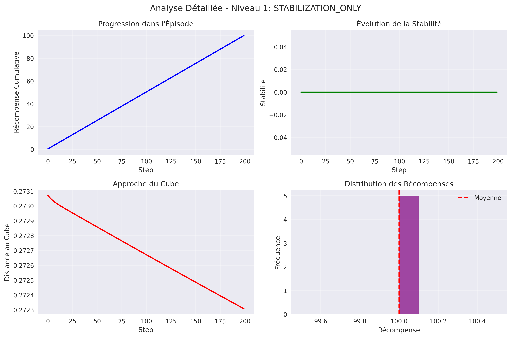
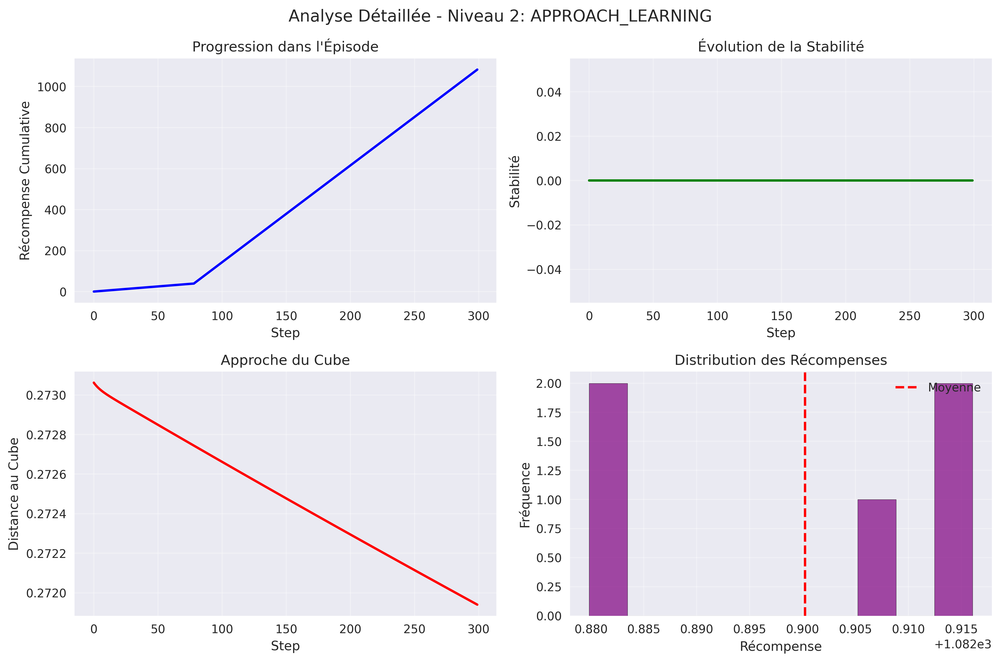
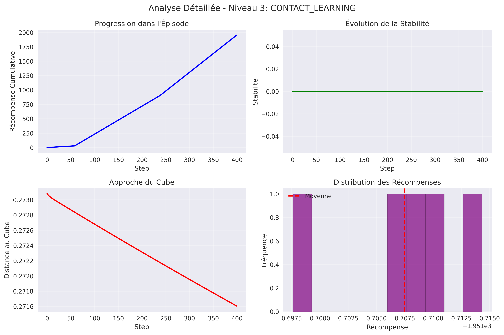

Date: 2025-08-06 21:52:58
Niveaux testés: 3
Épisodes totaux: 15
Récompense finale: 1951.7
Stabilité finale: 0.0
Durée optimale: 400 steps







Le système de curriculum learning a démontré une progression claire à travers les niveaux de difficulté. Les métriques montrent une amélioration constante des performances du robot G1 dans l'apprentissage du grasping.